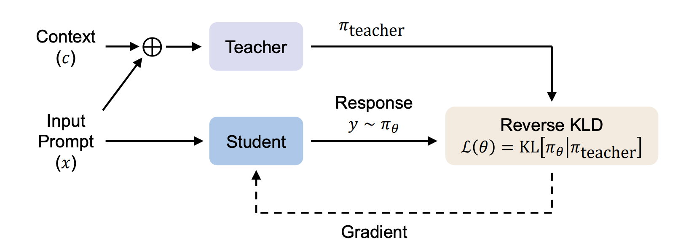

Rethinking Supervised Fine-Tuning: A First-Principles Derivation
Contextual On-Policy Self-Distillation as the Unified Solution to Forgetting
1 Introduction: The SFT Paradox
We typically view Supervised Fine-Tuning (SFT) as a process of addition: we feed a model new data to add new capabilities. But for anyone who has trained LLMs at scale, the reality feels more like subtraction. As we force a generalist model to mimic a narrow set of “gold” responses, we often trigger catastrophic forgetting, erasing the model’s subtle pre-trained priors in favor of rote memorization.
Why does this happen? This post argues that standard SFT is mathematically flawed for post-training. By treating fine-tuning as simple behavioral cloning on external datasets, we violate the fundamental “Trust Regions” required for stable learning.
In this deep dive, we will reconstruct the SFT objective from first principles. We will derive a unified framework, Contextual On-Policy Self-Distillation, which solves the forgetting problem by treating fine-tuning not as “learning from outsiders,” but as “learning from one’s better self.” We will show how recent state-of-the-art methods (from SDFT [5] to Thinking Machines [1]) are not different algorithms, but simply different “contexts” applied to this single, powerful mechanism.
2 The Mechanics of Forgetting
Capability regression during post-training or continual training, often termed “catastrophic forgetting”, is frequently treated as a mysterious side effect of fine-tuning, but it is better understood as a structural failure of the standard Supervised Fine-Tuning (SFT) objective. When we fine-tune a large language model, we are not merely adding a new skill; we are fundamentally altering its probability distribution.
2.1 The Root Cause: Distributional Mismatch
Standard SFT minimizes the negative log-likelihood of a static, external dataset. Mathematically, this forces the model to match a “demonstration distribution” that is often alien to its internal priors. Because the objective function contains no term to preserve the original model’s behavior, the optimization process is free to overwrite general capabilities (like coding, history, or logic) in its pursuit of minimizing loss on the specific fine-tuning tasks. The model “forgets” not because it runs out of space, but because the SFT objective explicitly rewards it for drifting away from its original manifold to fit the narrow distribution of the training set.
2.2 RL’s Razor: The Mechanics of Forgetting
Recent theoretical work has quantified the mechanics of this capability regression. The “RL’s Razor” paper [14] establishes a fundamental law of forgetting: the magnitude of capability loss is directly proportional to the KL divergence (distributional drift) between the fine-tuned model and its base version.
This highlights the critical structural flaw of standard Supervised Fine-Tuning (SFT). Because SFT is unconstrained—lacking any intrinsic mechanism to penalize distributional shift—it blindly pushes the model beyond the “trust region” where general capabilities reside [14].
The engine driving this drift is a capacity mismatch. As established by Allen-Zhu & Li (2024) [12], SFT is a high-bandwidth process capable of encoding roughly 2 bits of information per parameter, creating immense pressure for the model to memorize surface statistics. In contrast, as demonstrated by the efficiency of RL, the underlying objective of alignment is information-sparse (often ≈ 1 bit per episode) [13]. By using a high-capacity tool (SFT) to force-feed this sparse signal as if it were dense data, we induce the overfitting that RL’s Razor [14] identifies as the primary driver of capability regression.
3 Current Mitigations and Their Limits
The industry currently relies on two primary strategies to combat this regression. While effective to a degree, they function as “band-aids” that address the symptoms of drift rather than the root cause of the objective mismatch.
3.1 Data Replay (The “Brute Force” Approach)
The most common solution, exemplified by models like Llama 3, is data replay (or “generative replay”). This involves mixing a significant portion of general data (e.g., Wikipedia, code, web text) into the fine-tuning dataset.
- Why it works: Theoretically, replay works by constraining the optimization landscape. As formalized in Linear Mode Connectivity [15], it forces the gradient descent process to find a solution that lies in the intersection of the low-loss basins for both the new task and the general domain. Furthermore, approaches like GEM [16] demonstrate that by treating general capabilities as active constraints (ensuring gradient alignment) rather than passive priors, replay prevents the model from moving into regions where “general intelligence” loss is high.
- The “Provenance Gap” Limitation: Beyond computational inefficiency, the fatal flaw for most practitioners is data provenance. Post-training engineers almost never have access to the original, proprietary pre-training corpus (e.g., the exact 15T tokens used to train Llama 3). Instead, they must rely on “proxy replay” (public datasets like SlimPajama or Wikipedia). Because this proxy distribution differs from the model’s true internal priors, “replay” can ironically induce new distributional drift, overwriting the model’s actual knowledge with the proxy dataset’s quirks.
3.2 Parameter-Efficient Fine-Tuning (The “Constraint” Approach)
The second common strategy is to use Parameter-Efficient Fine-Tuning (PEFT) methods like LoRA (Low-Rank Adaptation), which freeze the majority of the model’s weights and only train a small subset of adapters.
- The “Learn Less, Forget Less” Trade-off: As demonstrated in LoRA Learns Less and Forgets Less [17], PEFT does not magically solve forgetting; it merely shifts the model along the Pareto frontier. By restricting updates to a low-rank subspace, LoRA physically prevents the model from making the high-rank weight perturbations often required to overwrite existing knowledge. Consequently, it forgets less simply because it changes less.
- Capacity Starvation: The cost of this stability is a “glass ceiling” on adaptation. While LoRA Without Regret [17] demonstrates that LoRA can match full fine-tuning for reasoning and RL tasks (which require low-rank policy updates), it explicitly notes that LoRA underperforms in knowledge-intensive settings (like continual pre-training). If a task requires memorizing vast amounts of new information, e.g. a high-rank update, LoRA’s limited parameter budget prevents it from absorbing the data, effectively preventing the model from fully learning the target distribution.
4 The Evolution of SFT: Deriving Contextual On-Policy Self-Distillation
To solve the Forgetting Problem without sacrificing capacity or efficiency, we must reconstruct the SFT objective by addressing the failures identified in Section 1. This derivation unfolds as a progression of necessary constraints: first anchoring the model to prevent drift, then aligning the data source to the model’s own distribution, and finally introducing context to drive improvement.
4.1 The Foundation: Anchoring via Trust Regions
Standard SFT is technically unconstrained; it allows the model to drift arbitrarily far from its base distribution to minimize loss. The first theoretical fix is to enforce a Trust Region, effectively treating SFT as a constrained optimization problem.
- The Theoretical Bridge: Recent work on Anchored SFT (ASFT) [11] demonstrates that SFT with a KL-divergence penalty is mathematically equivalent to offline Reinforcement Learning.
- Why it works: By explicitly adding the KL term to the objective, we force the model to balance “learning the new task” with “staying close to the prior.” However, because ASFT is typically applied to static, external datasets, it remains an off-policy method, leaving it vulnerable to distribution mismatch.
4.2 The Mechanism: On-Policy Distillation and Reverse KL

To strictly avoid the “alien data” problem, we must train on the model’s own samples. This necessitates a fundamental shift in the training objective from standard Cross-Entropy (Forward KL) to Reverse KL, as established in MiniLLM [18].
Minimizing Exposure Bias: Standard SFT suffers from exposure bias because the model is trained on “gold” teacher trajectories (\(p_{data}\)) but must generate its own trajectories during inference (\(p_{\theta}\)). As errors accumulate, the model drifts into states it has never seen. By training on its own rollouts (\(x \sim p_{\theta}\)), on-policy distillation forces the model to learn how to recover from its own specific deviations, ensuring the training distribution matches the inference reality.
The Shift to Reverse KL (Precision over Hedging): The move to on-policy data requires inverting the divergence measure, which fundamentally alters the model’s behavior:
- Forward KL (SFT Standard): Minimizes \(D_{KL}(p_{data} || p_{\theta})\). This is mean-seeking, forcing the student to cover the teacher’s entire distribution. As argued in MiniLLM [18], if the student lacks the capacity to model the teacher’s full complexity (especially the “long tail”), it is forced to “hedge” its bets. It assigns probability mass to unlikely or noisy tokens (“void regions”) just to avoid zero-probability penalties, directly leading to hallucinations and generic responses.
- Reverse KL (On-Policy Standard): Minimizes \(D_{KL}(p_{\theta} || p_{teacher})\). This is mode-seeking (or “zero-forcing”). It heavily penalizes the student for generating anything the teacher considers incorrect but does not penalize it for missing the teacher’s long tail. This encourages the student to collapse its probability mass solely onto the teacher’s highest-confidence modes, resulting in more precise and factually accurate generations.
Empirical Validation (Reversibility): The power of this mechanism is validated by the fact that “forgetting” is often reversible. A compelling example is Thinking Machines Lab’s Training an Internal Assistant study [1]. When a model was fine-tuned on internal docs, it lost its instruction-following ability. However, by using the original model as a teacher to distill behavior back into the fine-tuned version, the capability was restored. This confirms that capability regression arises from objective mismatch—which on-policy distillation effectively resolves—rather than a permanent loss of capacity.
Implementation Note: In practice, pure Reverse KL can lead to excessive mode collapse (lack of diversity). State-of-the-art approaches like Generalized Knowledge Distillation (GKD) [6] often utilize Jensen-Shannon Divergence (JSD)—a symmetric, bounded mixture of Forward and Reverse KL—to stabilize training while retaining the on-policy benefits of the reverse objective.
4.3 The Synthesis: Contextual On-Policy Self-Distillation
This creates a paradox: if the model minimizes Reverse KL against its own unguided distribution, it collapses into a degenerate state. To enable learning, we need a target that is internal (to maintain the on-policy manifold) yet superior (to provide a learning signal).
The solution is Contextual On-Policy Self-Distillation. We split the model into two states:
- The Student (\(p_{\theta}\)): The standard model (unconditioned), generating the on-policy rollout.
- The Teacher (\(p_{\theta}(\cdot|C)\)): The same model, conditioned on Context \(C\) (e.g., retrieval, reasoning chains, or safety specs).
The Student minimizes the divergence (Reverse KL or JSD) between its own unconditioned output and the Teacher’s context-enhanced output. This ensures the update is strictly On-Policy (solving exposure bias) and Anchored (minimizing drift), while the Context provides the necessary gradient for capability improvement.
5 A Taxonomy of Contextual Self-Distillation
We can now formally define the solution. Across various domains, state-of-the-art methods share the same underlying structure: they all minimize the Reverse KL divergence between the student’s unconditioned policy (\(p_\theta\)) and a context-enhanced teacher (\(p_\theta(\cdot|C)\)):
\[\mathcal{L} = D_{KL}( p_\theta(y|x) \parallel p_\theta(y|x, C) )\]
These approaches are not different algorithms; they are merely distinct choices of Context (\(C\)) used to drive the self-distillation process. To avoid confusion, we categorize them by the Nature of the Context and the Learning Objective.
5.1 The Comparison Matrix
| Type | Context (\(C\)) | Teacher’s Advantage | Student’s Goal | Primary Use Case |
|---|---|---|---|---|
| Type A (SDFT) | Examples (Few-Shot) | “I see how to do it.” | Maintenance (Don’t forget) | Continual Learning |
| Type B (Deliberative) | Rules (Safety Specs) | “I check the rules.” | Alignment (Be safe instinctively) | Safety / Constitutional AI |
| Type C (OPCD) | Instructions (System Prompt) | “I am told who to be.” | Efficiency (Save tokens) | Prompt Engineering Compilation |
| Type D (PID) | Omniscience (Answer Key) | “I know the answer.” | Reasoning (Derive the path) | Complex Reasoning (Math/Code) |
5.2 Type A: Context = Demonstrations (SDFT)

In Self-Distillation Fine-Tuning (SDFT) [5], the goal is to prevent capability regression during continual learning. Here, the context \(C\) is a set of few-shot expert demonstrations. The model uses its latent capacity to perform the task in-context (the Teacher state). SDFT then “compiles” this transient, prompt-dependent ability into the permanent weights of the Student. Because the student mimics its own context-enhanced outputs, the gradient update remains strictly on-policy, minimizing drift while locking in the new skill.
5.3 Type B: Context = Safety Specifications (Deliberative Alignment)

In approaches like Deliberative Alignment [9], the goal is to internalize complex safety rules. The context \(C\) is the full Safety Policy or Specification. The Teacher generates synthetic data where it explicitly “deliberates” on these rules (System 2 thinking) before answering. The Student then distills this process, effectively internalizing the external policy document into its weights. The result is a model that adheres to the safety rules “intuitively” (System 1) without needing the policy document present at inference time.
5.4 Type C: Context = System Prompts (OPCD)

In On-Policy Context Distillation (OPCD) [7], the goal is to internalize instructions or past experiences. The context \(C\) consists of System Prompts or Historical Solution Traces. Unlike standard instruction tuning (which is off-policy), OPCD trains the student to match the distribution of the prompted teacher using the student’s own rollouts. This allows the model to “absorb” the system prompt into its weights, behaving as if it were prompted without incurring the inference cost of processing the prompt tokens.
5.5 Type D: Context = Privileged Information (PID / OPSD)
In Privileged Information Distillation [8], the goal is to solve hard reasoning tasks. The context \(C\) is Privileged Information (PI)—such as ground truth answers, future states, or hidden “thoughts”—that acts as a cheat sheet. The paper introduces \(\pi\)-Distill and OPSD (On-Policy Self-Distillation) to handle this. The Teacher sees the future/answer and guides the blind Student. The Student minimizes the divergence from this “omniscient” teacher, effectively learning to simulate the latent reasoning process required to reach the correct solution without actually seeing the cheat sheet.
6 Conclusion: The Perfect Pre-RL State
We started with a simple question: How do we stop SFT from breaking the model?
The answer, it turns out, is to stop treating SFT and RL as opposites. By applying RL’s Razor [14] (the “Trust Region” constraint), we found that the only safe way to fine-tune a model is to use its own distribution as the training data (On-Policy) and its own priors as the anchor (Reverse KL).
The Unified Picture
This framework gives us a new way to categorize the explosion of post-training papers. They aren’t inventing new physics; they are just choosing different Contexts to guide the self-distillation process:
- Want to maintain skills? Use Examples (Type A) [5].
- Want to align behavior? Use Safety Specs (Type B) [9].
- Want to save tokens? Use Instructions (Type C) [7].
- Want to improve reasoning? Use Privileged Info (Type D) [8].
The Takeaway
This suggests that the future of post-training isn’t about collecting massive external datasets, but about designing better Contexts. If we can prompt the model to be smart once (the Teacher), we can distill that intelligence forever (the Student). This approach yields the “Perfect Pre-RL State”: a model that is already aligned, robust, and mathematically anchored—ready to be further optimized by Reinforcement Learning without the risk of collapse.
7 References
- On-Policy Distillation. Thinking Machines Lab. 2025.
- Retaining by Doing: The Role of On-Policy Data in Mitigating Forgetting. Howard Chen, Noam Razin, Karthik Narasimhan, Danqi Chen. 2025.
- Agentic Continual Pre-Training. Tongyi Lab DeepResearch. 2025.
- The LLaMA-3 Technical Report. Meta AI. 2024.
- Self-Distillation Enables Continual Learning. Idan Shenfeld, Mehul Damani, Jonas Hübotter, Pulkit Agrawal. 2026.
- On-Policy Distillation of Language Models: Learning from Self-Generated Mistakes. Rishabh Agarwal, Nino Vieillard, Yongchao Zhou, Piotr Stanczyk, Sabela Ramos, Matthieu Geist, Olivier Bachem. 2023.
- On-Policy Context Distillation for Language Models. Tianzhu Ye, Li Dong, Xun Wu, Shaohan Huang, Furu Wei. 2026.
- Privileged Information Distillation for Language Models. Emiliano Penaloza, Nicolas Gontier, Alexandre Lacoste, Laurent Charlin. 2026.
- Deliberative Alignment: Reasoning Enables Safer Language Models. Melody Guan, Manas Joglekar, Eric Wallace, Saachi Jain, Boaz Barak, et al. 2025.
- On the Generalization of SFT: A Reinforcement Learning Perspective with Reward Rectification. Yongliang Wu, Yizhou Zhou, Ziheng Zhou, Yingzhe Peng, Xinyu Ye, et al. 2025.
- Anchored Supervised Fine-Tuning. He Zhu, Junyou Su, Peng Lai, Ren Ma, Wenjia Zhang, Linyi Yang, Guanhua Chen. 2026.
- Physics of Language Models: Part 3.3, Knowledge Capacity Scaling Laws. Zeyuan Allen-Zhu, Yuanzhi Li. 2024.
- LoRA Without Regret. Thinking Machines Lab (John Schulman). 2025.
- RL’s Razor. Idan Shenfeld, Jyothish Pari, Pulkit Agrawal. 2025.
- Linear Mode Connectivity in Multitask and Continual Learning. Seyed Iman Mirzadeh, Mehrdad Farajtabar, Razvan Pascanu, Hassan Ghasemzadeh. 2021.
- Gradient Episodic Memory for Continual Learning. David Lopez-Paz, Marc’Aurelio Ranzato. 2017.
- LoRA Learns Less and Forgets Less. Dan Biderman, Jacob Portes, Jose Javier Gonzalez Ortiz, Mansheej Paul, Philip Greengard, Connor Jennings, et al. 2024.
- MiniLLM: Knowledge Distillation of Large Language Models. Yuxian Gu, Li Dong, Furu Wei, Minlie Huang. 2023.